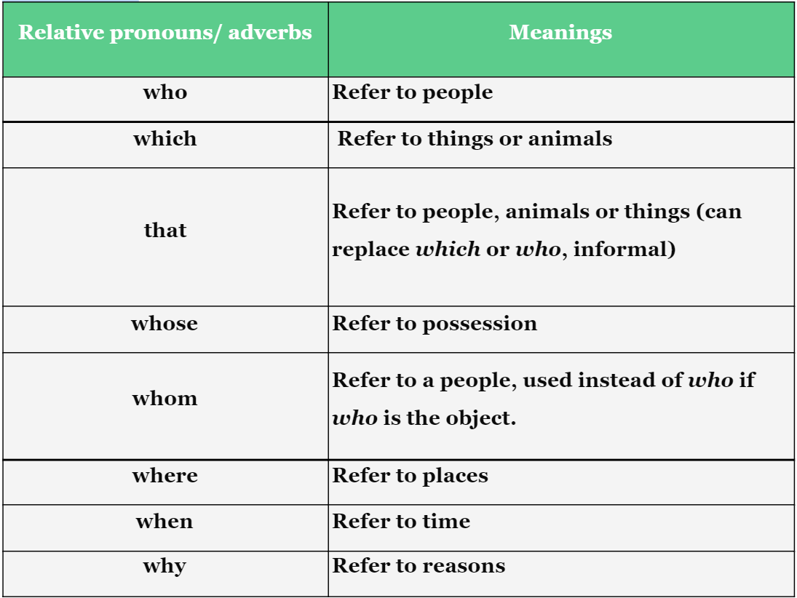

We can use relative clauses to join two English sentences, or to give more information about something.
Example:
Relative clause starts with relative pronouns (who, which, that, whose, whom) or relative adverbs (where, when, why).

There are two types of relative clause: defining and non-defining relative clause.
1. Defining relative clauses
2. Non-defining relative clauses
We can use relative clauses to join two English sentences, or to give more information about something.
Example:
1.The relative pronoun is the subject:
First, let's consider when the relative pronoun is the subject of a defining relative clause.
We can use 'who', 'which' or 'that'. We use 'who' for people and 'which' for things. We can use 'that' for people or things.
The relative clause can come after the subject or the object of the sentence. We can't drop the relative pronoun.
For example (clause after the object of the sentence):
More examples (clause after the subject of the sentence):
2: The relative pronoun is the object:
Next, let's talk about when the relative pronoun is the object of the clause.
In this case we can drop the relative pronoun if we want to.
Again, the clause can come after the subject or the object of the sentence.
For example: (clause after the object of the sentence):
More examples (clause after the subject of the sentence):
We don't use 'that' in non-defining relative clauses, so we need to use 'which' if the pronoun refers to a thing, and 'who' if it refers to a person. We can't drop the relative pronoun in this kind of clause, even if the relative pronoun is the subject of the clause.
For example: (clause after the subject of the sentence):
More examples (clause after the object of the sentence):